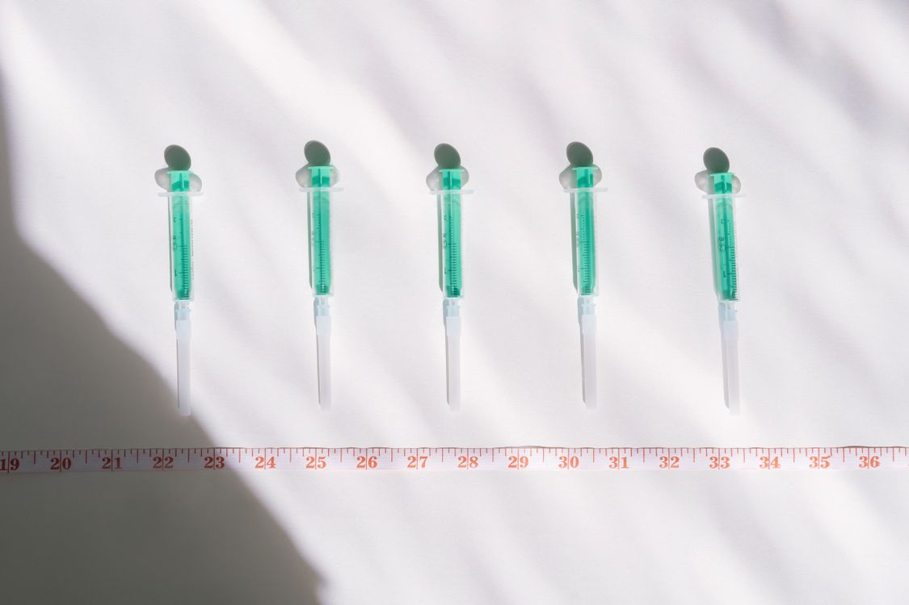
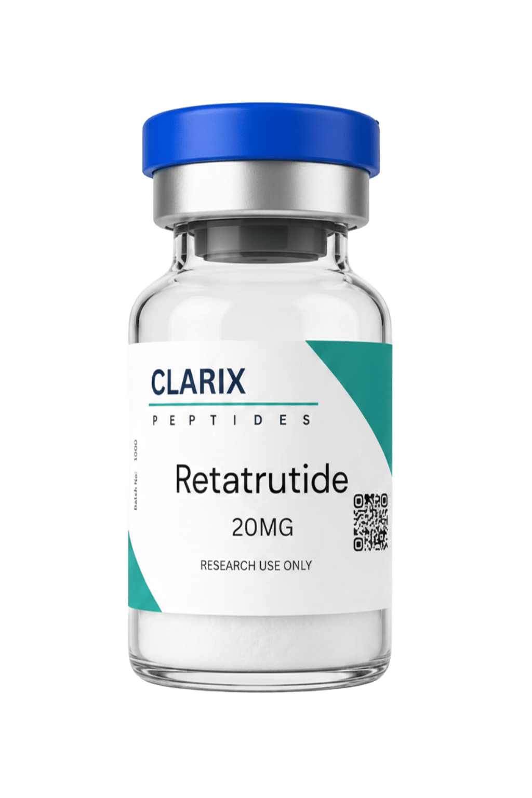

One of the most frequently searched topics around retatrutide is its dosage. With Phase 2 trial data now published and widely referenced, researchers have a solid body of evidence to draw from when designing studies. This guide summarises the retatrutide dosing data from published literature, explains the titration approach used in clinical models, and outlines the dose-response relationship observed across the tested range.
Retatrutide is a triple agonist at GLP-1, GIP, and glucagon receptors. Its pharmacological profile means that dose selection has a meaningful impact on both the magnitude of observed effects and the frequency of adverse events. The dose-response curve is steep enough that differences between the 4mg, 8mg, and 12mg maintenance doses produced clearly distinguishable outcomes in the Phase 2 data, making retatrutide dose selection an important variable in any research design.
Understanding the retatrutide dosing schedule also matters because the compound is a long-acting molecule, designed for once-weekly subcutaneous administration. This extended half-life is engineered into the molecule and influences how steady-state plasma concentrations build during titration.
The 2023 Phase 2 trial assigned participants across five groups. Three active treatment groups received retatrutide at different maintenance targets. Titration schedules were used to escalate all participants from lower starting doses to their assigned maintenance dose, rather than initiating at the full maintenance dose from week one.
The maintenance doses studied were:

All participants assigned to the 4mg, 8mg, and 12mg groups began at a retatrutide starting dose of 2mg weekly. This initial period was used to establish GI tolerability before escalation. Each titration step typically lasted four weeks. The full retatrutide dose schedule for the 12mg group therefore involved approximately 12 weeks of escalation before reaching the maintenance phase.
This staged retatrutide dosing schedule reflects an approach common across the GLP-1 receptor agonist class, where initiating at the target dose significantly increases the frequency and severity of gastrointestinal adverse events. The titration phase allows the GI tract to adapt to incretin-mediated gastric emptying changes before full receptor engagement is achieved.
The dose-response relationship was clear and consistent. At 48 weeks, mean percentage body weight reduction from baseline was approximately:
The 8mg and 12mg groups produced broadly similar results, suggesting a degree of plateau in the dose-response curve at the upper end of the range studied. The 12mg group did show marginally higher mean weight reduction, but confidence intervals overlapped substantially with the 8mg group.
Adverse event frequency was also dose-dependent, with GI events being more common in the higher-dose groups during the titration phase. Most events were mild to moderate and transient, resolving after the titration period. The full adverse event profile is covered in the companion article on retatrutide side effects.
The retatrutide dose schedule used in the Phase 2 trial was once-weekly subcutaneous injection. This frequency reflects the compound's pharmacokinetic design. Retatrutide has a half-life long enough to maintain relatively stable plasma concentrations between weekly doses, avoiding the peaks and troughs associated with shorter-acting GLP-1 agonists administered daily.
Weekly dosing also makes compliance in longer studies more practical compared to daily administration regimens. The same once-weekly schedule has been carried forward into Phase 3 development, reinforcing it as the standard retatrutide dosing frequency in the clinical literature.

HPLC-verified, 99%+ purity. COA with every order. Fast UK dispatch. Suitable for in-vitro research.
For in-vitro research contexts, compound concentration selection is typically guided by published IC50 data and receptor binding affinities rather than the clinical dose figures above. The clinical doses represent systemic plasma concentrations achieved in humans following subcutaneous administration. In-vitro work operates at different concentration scales and in controlled cellular environments.
When preparing retatrutide solutions for laboratory use, standard reconstitution practice applies. Bacteriostatic water is the preferred diluent for multi-use preparations. Working stock concentrations should be calculated from the target assay concentration and the reconstituted volume, with the lyophilised mass as the starting point. Always verify the actual mass in the vial against the stated content before calculating, as slight variations in lyophilised form are normal.